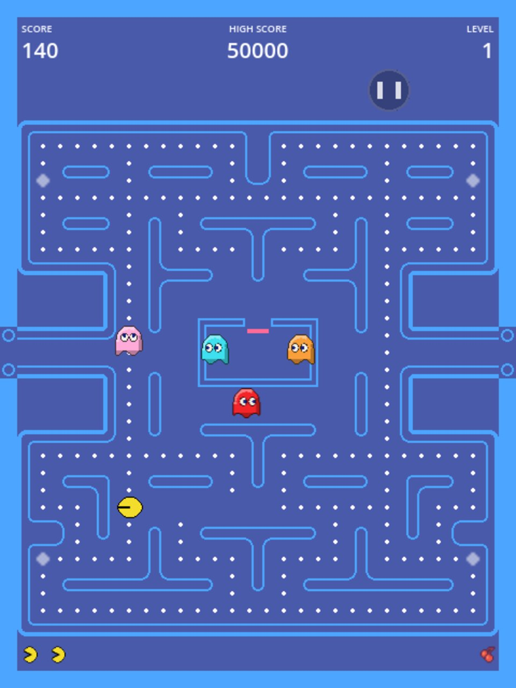
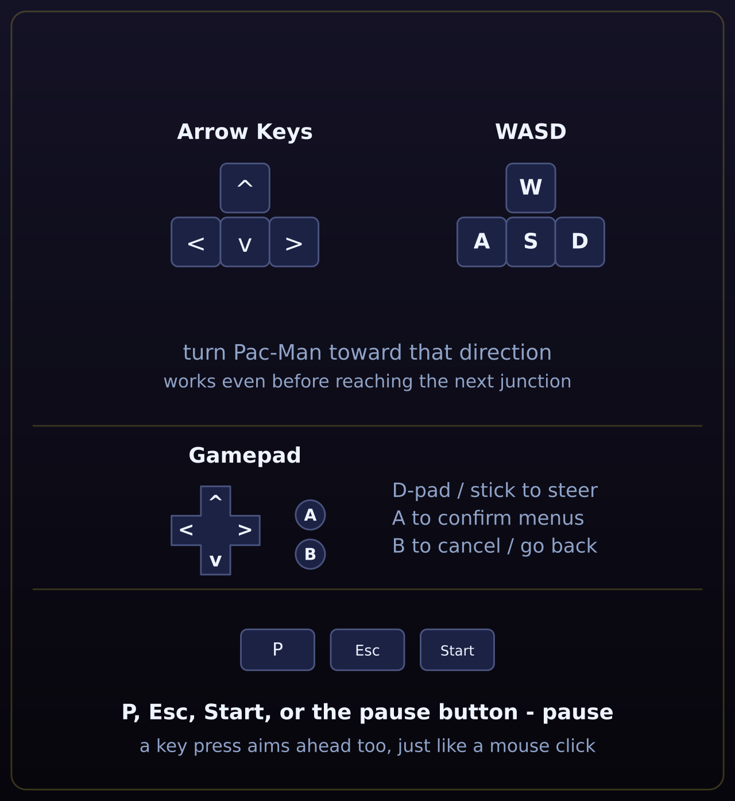
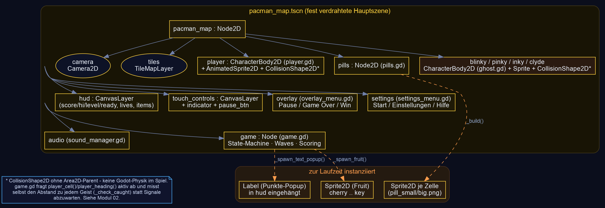
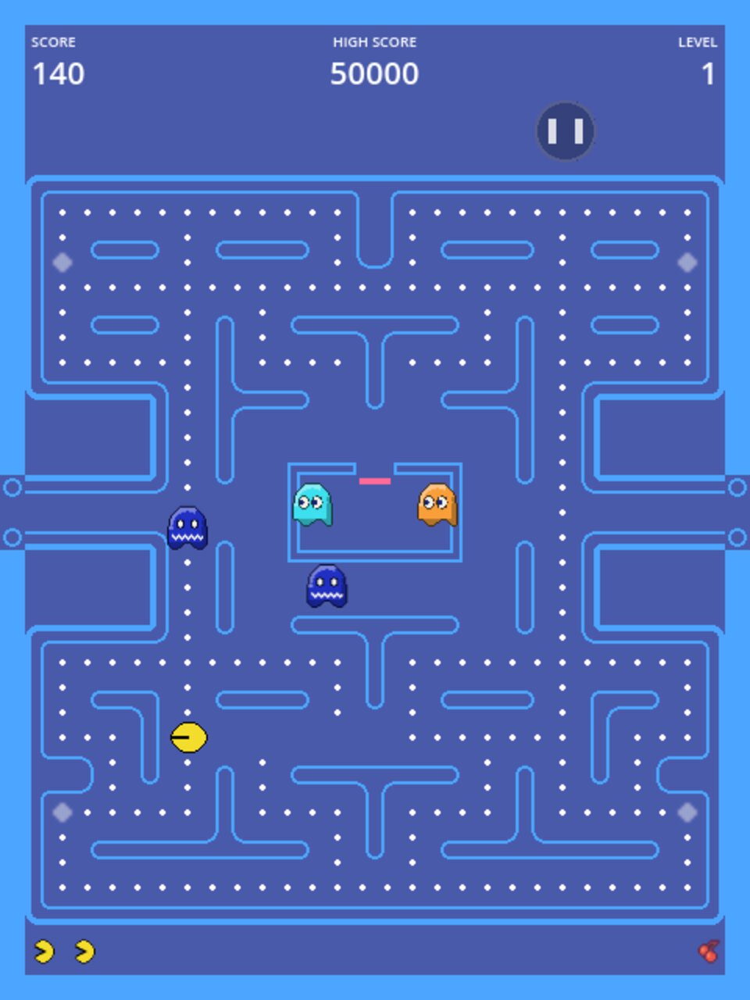
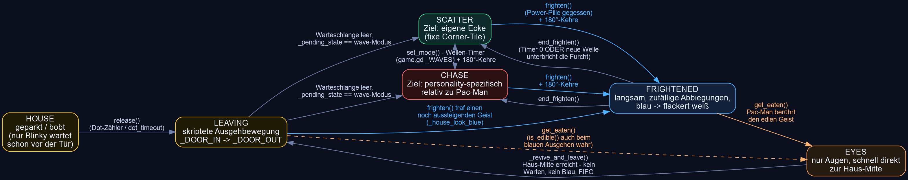

GDScript-Dateien — Bedeutung & Modularisierung
ein Koordinator, eine Grid-Wahrheit, vier baugleiche Geister
Anders als in einem Formations-Shooter gibt es hier keine Physik-Engine, die
Kollisionen meldet — alles hängt an einer einzigen, statischen
30×30-Rastertabelle (MazeGrid), die sowohl Bewegung als auch
Kollision beschreibt. game.gd ist der einzige Ort, der Zustand,
Punkte und Geister-Koordination gleichzeitig kennt; player.gd und
ghost.gd wissen dagegen nichts voneinander — sie lesen sich nur
gegenseitig über schmale, gezielte Methoden aus (player_cell(),
player_heading(), blinky_cell()).
| Bereich | Dateien | Zweck |
|---|---|---|
| Einstieg / Koordinator |
game.gd | Einziger Ort, der den Rundenzustand kennt (Grace-Start → Wellen/Angriffe → Tod/Respawn → Level-Clear → Game Over/Win). Verbindet alle Signale, würfelt nichts selbst, ruft nur Ghost/Player-API auf. |
| Spielfigur | player.gd | Grid-Movement (Tile-Center-Gliding), vier gleichwertige Eingabewege (Tastatur/Gamepad, Touch-Swipe, Maus-Klick mit BFS-Pfad), eine gemeinsame Warteschlangen-Logik für alle. |
| Geister-KI | ghost.gd | Ein Skript für alle vier Persönlichkeiten (Personality-Enum) — Zustandsautomat HOUSE/LEAVING/SCATTER/CHASE/FRIGHTENED/EYES, personality-spezifische Zielwahl in _chase_target(). |
| Maze-Daten | maze_grid_array.gd (class_name MazeGrid) |
Statische 30×30-Kollisionstabelle als reines Datenskript (RefCounted, keine Node-Instanz) — Zell↔Welt-Konvertierung, BFS-Pfadsuche für Mausklicks, Pillen-Layout-Generator, „No-Up"-Kreuzungen. |
| Pellets / Punkte-Layer |
pills.gd | Eigenständiger Collectible-Layer, komplett getrennt von MazeGrids Kollisionsdaten — baut sein eigenes Dictionary aus MazeGrid.build_pills(). |
| UI / Menüs | overlay_menu.gd settings_menu.gd touch_controls.gd swipe_indicator.gd pause_button.gd |
Pause/Game Over/Win (Overlay), Start-Screen/Einstellungen/Hilfe (Settings), Touch-Kompass + Pause-Button im reservierten Scoreboard-Band. |
| Daten / Persistenz |
hall_of_fame.gd sound_manager.gd |
Highscore-Liste (user://), Sound-Wiedergabe inkl. tempo-synchroner Pillen-„Wakka"-Rate. |


assets/graphics/help/keyboard.png)Szenenaufbau & Bewegungsmodell
eine feste Szene — und, ungewöhnlich, keine Godot-Physik
Es gibt nur eine fest verdrahtete Hauptszene,
pacman_map.tscn (run/main_scene). Spieler und alle vier
Geister sitzen als eigene Kindnodes direkt darin — nicht dynamisch gespawnt wie
Galagas Gegnerwellen, weil ein Pacman-Maze eine feste, kleine Besetzung hat.
Zur Laufzeit kommen nur die Pillen-Sprites (aus MazeGrid.build_pills()),
die Frucht und kurze Punkte-Popups hinzu.

Kein Area2D, keine Kollisionsschichten — reine Grid-/Distanz-Logik
Der auffälligste Unterschied zu einem klassischen Godot-Shooter: player.gd
und ghost.gd sind zwar CharacterBody2D, aber keine
Zeile im Projekt ruft move_and_slide() auf, und nirgends ist
collision_layer/collision_mask gesetzt — die
CollisionShape2D-Kinder liegen zwar in den Szenen, laufen aber ins
Leere, weil kein Area2D/PhysicsBody2D-Signal sie je
auswertet. Bewegung ist reines global_position +=-Tweening zwischen
Zellmittelpunkten; „Kollision" bedeutet in diesem Projekt fast immer einen
Dictionary- oder Distanz-Check gegen MazeGrid, nicht ein
area_entered-Signal.
| Ereignis | Erkennungsmechanik | Wo |
|---|---|---|
| Spieler vs. Wand | Zug wird vor dem Betreten gegen MazeGrid.is_free_for_player() geprüft — eine „Kollision" mit einer Wand kann dadurch gar nicht erst passieren | player.gd::_can_leave() |
| Spieler vs. Pille | Dictionary-Lookup nach Gridzelle, ausgelöst vom reached_cell-Signal (feuert exakt bei Ankunft im Zellmittelpunkt) | Pills._on_player_reached_cell() |
| Spieler vs. Geist | gleiche Zelle oder ein geschwungener Segment-Abstand zwischen Vor-/Ist-Position beider Beteiligter (fängt ein „Durchkreuzen" zwischen zwei Frames ab) | game.gd::_check_caught() / _swept_gap() |
| Spieler vs. Frucht | simples Vector2.distance_to() < touch_eat, jeden Frame geprüft solange eine Frucht liegt | game.gd::_check_fruit_eaten() |
| Geist vs. Geisterhaus | MazeGrid.is_ghost_house() — nur in EYES/LEAVING betretbar, sonst wie eine Wand behandelt | ghost.gd::_can_enter() |
MazeGrid außerdem ohne laufenden Baum testbar (RefCounted,
rein statische Funktionen).
Wesentliche Code-Ausschnitte
Steuerung → Grid-Movement → Geister-Ziele → Fangen → Pellets/Score
ASteuerung — vier Eingabewege, eine gemeinsame Warteschlange
Tastatur/Gamepad, Touch-Swipe und Maus-Klick landen alle im selben
_queued-Feld — ein früh gedrückter Richtungswechsel „wartet" bis zur
nächsten Kreuzung, statt pixelgenau in dem Moment kommen zu müssen:
func _poll_input() -> void:
for action in _ACTION_DIR:
if Input.is_action_just_pressed(action):
_queued = _ACTION_DIR[action]
_queued_from_path = false
_mouse_path.clear()
return
if _queued != Vector2i.ZERO:
return
# nichts gedrückt, keine Wende wartet: Mausklick-Pfad weiter abarbeiten
if not _mouse_path.is_empty():
_queued = _mouse_path.pop_front()
_queued_from_path = trueEin Linksklick pathet über MazeGrid.find_path() (Breitensuche) zum
angeklickten Feld und speist das Ergebnis Schritt für Schritt in genau dieselbe
Warteschlange ein — ein Klick „zielt" dadurch, exakt wie ein Tastendruck, auf die
nächste freie Abzweigung voraus:
func _handle_mouse_click(world_pos: Vector2) -> void:
var goal := MazeGrid.nearest_free_for_player(MazeGrid.world_to_cell(world_pos))
var start := _target if _moving else _cell
var path := MazeGrid.find_path(start, goal) # BFS, keine Geister-Vermeidung (Absicht)
if path.is_empty():
return
_mouse_path = path
_queued = _mouse_path.pop_front()
_queued_from_path = trueBGrid-Movement & Tile-Center-Gliding
Sowohl Spieler als auch Geister gleiten linear zwischen zwei Zellmittelpunkten und entscheiden erst am Mittelpunkt über die nächste Richtung — die Umrechnung Welt↔Grid ist eine einzige feste Formel:
static func cell_to_world(cell: Vector2i) -> Vector2:
return Vector2(
cell.x * CELL_SIZE + CELL_SIZE / 2.0,
(cell.y + ROW_OFFSET) * CELL_SIZE + CELL_SIZE / 2.0)
static func world_to_cell(pos: Vector2) -> Vector2i:
return Vector2i(
int(floor(pos.x / CELL_SIZE)),
int(floor(pos.y / CELL_SIZE)) - ROW_OFFSET) # ROW_OFFSET=7: Grid-Zeile 0 = Tile-Zeile 7func _advance(delta: float) -> void:
var to_target := _target_pos - global_position
var step := speed * delta
if step < to_target.length():
global_position += to_target.normalized() * step
return
# Zellmitte erreicht -> nächste Zelle wählen
global_position = _target_pos
_cell = _target
reached_cell.emit(_cell)
if _queued != Vector2i.ZERO and _can_leave(_cell, _queued):
_dir = _queued; _queued = Vector2i.ZERO
elif not _can_leave(_cell, _dir):
_dir = Vector2i.ZERO; _moving = false; return
_set_target(_dir)CGeister-KI — ein Skript, vier Persönlichkeiten
An jeder Kreuzung wählt _decide_dir() die Nicht-Umkehr-Richtung,
deren Nachbarzelle dem aktuellen Zieltile am nächsten liegt (klassische
Arcade-Regel, Luftlinie, kein A*) — Frightened bricht das bewusst zugunsten
von Zufall:
func _decide_dir(tile: Vector2i, incoming_dir: Vector2i) -> Vector2i:
var banned := -incoming_dir # niemals umkehren (außer Sackgasse)
if _state == State.FRIGHTENED:
var options: Array[Vector2i] = []
for d: Vector2i in _PREFER:
if d != banned and _passable(tile, d):
options.append(d)
return options[randi() % options.size()] if not options.is_empty() else banned
var goal := Vector2(_target_cell())
var no_up := MazeGrid.is_no_up(tile)
var best := Vector2i.ZERO
var best_dist := INF
for d: Vector2i in _PREFER: # Tie-Break: oben > links > unten > rechts
if d == banned or (no_up and d == Vector2i.UP) or not _passable(tile, d):
continue
var dist := Vector2(_next_cell(tile, d)).distance_squared_to(goal)
if dist < best_dist:
best_dist = dist; best = d
return best if best != Vector2i.ZERO else bannedDie vier Zieltile-Strategien reproduzieren bewusst die Original-Arcade-Regeln, Überlauf-Bug inklusive (Inky/Pinky bei „nach oben"):
match personality:
Personality.BLINKY:
return pac # Shadow: direkt auf Pac-Man
Personality.PINKY:
return _tiles_ahead(pac, head, 4) # Ambusher: 4 Felder voraus
Personality.INKY:
var pivot := _tiles_ahead(pac, head, 2)
return pivot * 2 - _game.blinky_cell() # Blinky-Vektor verdoppelt
Personality.CLYDE:
var me := MazeGrid.world_to_cell(global_position)
if (pac - me).length_squared() > 64:
return pac # >8 Felder: wie Blinky
return _scatter_target() # sonst: Flucht in die eigene EckeDFangen & Essen — Segment-Abstand statt Area2D
Weil nichts über Godots Physik läuft, misst game.gd selbst, jeden
Physik-Frame, den Abstand zwischen Pac-Man und jedem aktiven Geist — inklusive
eines geschwungenen Segment-Checks gegen das „Durchkreuzen" bei hoher
Relativgeschwindigkeit:
func _check_caught() -> void:
var pac_now := _player.global_position
var pac_tile := MazeGrid.world_to_cell(pac_now)
var lethal: Ghost = null
for g in _ghosts:
if not (g.is_dangerous() or g.is_edible()):
continue
var same_tile := MazeGrid.world_to_cell(g.global_position) == pac_tile
var gap := _swept_gap(_pac_prev_pos, pac_now, _ghost_prev_pos.get(g, g.global_position), g.global_position)
if g.is_edible():
if same_tile or gap < touch_eat:
_eat_ghost(g); _remember_positions(); return
elif same_tile or gap < touch_kill:
lethal = g
if lethal != null:
_dying = true; _death_sequence()
_remember_positions()func _swept_gap(a0: Vector2, a1: Vector2, b0: Vector2, b1: Vector2) -> float:
if a0.distance_to(a1) > 40.0 or b0.distance_to(b1) > 40.0:
return a1.distance_to(b1) # Teleport (Tunnel/Reset) -> nur Endpunkte vergleichen
var cp := Geometry2D.get_closest_points_between_segments(a0, a1, b0, b1)
return cp[0].distance_to(cp[1]) # kürzester Abstand der beiden Bewegungsstrecken
_start_frightened() untenEPower-Pellets & Punktevergabe
Pillen kennen nur ihre Art (klein/groß) — ob eine große Pille die Geister
verschreckt, entscheidet ausschließlich game.gd im Signal-Handler:
func _on_pill_eaten(kind: int, _cell: Vector2i) -> void:
_dots_eaten += 1
_time_since_dot = 0.0
if kind == MazeGrid.PILL_BIG:
_add_score(POINTS_POWER_PILL) # 50
_start_frightened() # alle Geister: frighten() + 180°-Kehre
else:
_add_score(points_per_dot) # 10, einstellbar
if _dots_eaten == fruit_dot_1 or _dots_eaten == fruit_dot_2:
_spawn_fruit()Gefressene Geister zahlen in einer verdoppelnden Kette (200 → 400 → 800 → 1600), die bei jeder neuen Power-Pille zurückgesetzt wird — und ab der ersten Extra-Leben- Schwelle wächst der Abstand zur nächsten geometrisch statt linear:
func _eat_ghost(g: Ghost) -> void:
_ghost_eat_chain += 1
var pts := POINTS_GHOST_BASE * (1 << (_ghost_eat_chain - 1)) # 200,400,800,1600
_add_score(pts)
g.get_eaten()
func _add_score(points: int) -> void:
score += points
while _next_extra_life > 0 and score >= _next_extra_life:
lives += 1
_next_extra_life += int(_cur_extra_gap)
_cur_extra_gap *= extra_life_gap_mult # 2500 -> +5000 -> +10000 -> +20000 …
score_changed.emit(score) # emittiert, aber aktuell von niemandem gehört —
_update_score_label() # das HUD-Label aktualisiert sich selbst, direktWichtige Signale
wer meldet was an wen
| Signal | Emitter | Empfänger | Bedeutung |
|---|---|---|---|
died | Player | Game._on_player_died |
Leben verloren; startet Freeze → Todesanimation → Respawn-Sequenz |
reached_cell(cell) | Player | Pills._on_player_reached_cell |
Feuert bei jeder erreichten Zellmitte — treibt Pillen-Erkennung UND desired_dir() für den Touch-Kompass |
pill_eaten(kind, cell) | Pills | Game._on_pill_eaten |
Punkte, Fruit-Trigger bei bestimmten Zählerständen, Frightened-Start bei großer Pille |
all_eaten | Pills | Game._on_all_eaten |
Letzte Pille weg → Level-Clear-Sequenz (oder Sieg ab MAX_LEVEL) |
score_changed(new_score) | Game | — (aktuell nicht verbunden) | Wird emittiert, aber von keinem Node abonniert; das Score-Label aktualisiert sich stattdessen direkt in _update_score_label() — als Erweiterungspunkt stehen gelassen |
settings_requested / stats_requested / highscores_requested / help_requested / back_to_start_requested | Overlay (Pause-Menü) | Game | Navigation aus dem Pausenmenü heraus |
started(config) / settings_changed(config) / closed / stats_requested / hof_requested | Settings (Start-Screen) | Game | „Play" gedrückt / Einstellungen live geändert / Panel geschlossen / Stats bzw. Hall of Fame angefragt |
tapped | PauseButton | TouchControls._on_pause |
Pause-Button im Scoreboard-Band angetippt/geklickt |
Geister-Zustandsmaschine
ein Automat, vier Instanzen — HOUSE bis EYES und zurück
Jeder Geist durchläuft denselben Sechs-Zustands-Automaten; welcher Modus
(SCATTER/CHASE) gerade „gilt", kommt von außen (game.gds
Wellen-Timer über set_mode()), alles andere entscheidet der Geist
selbst. Ein Moduswechsel UND das Auslösen von Frightened reißen den Geist mit
einer sofortigen 180°-Kehre aus seiner aktuellen Richtung — die einzigen beiden
Momente, in denen ein Geist überhaupt umkehrt.

ghost.gd (Graphviz) — blaue Kanten: Furcht-Auslöser/-Ende, orange: Fangen/WiederbelebenEYES wartet nicht im Haus — sobald die Augen
die Tür-Mitte erreichen, revivet _revive_and_leave() den Geist
sofort wieder in LEAVING, nie blau, in der Reihenfolge, in der die
Augen ankamen (FIFO). Ein Spieler kann sich also nicht an der Tür postieren, um
denselben Geist ein zweites Mal im Vorbeigehen zu fressen.